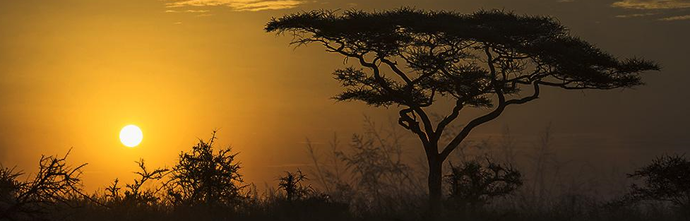
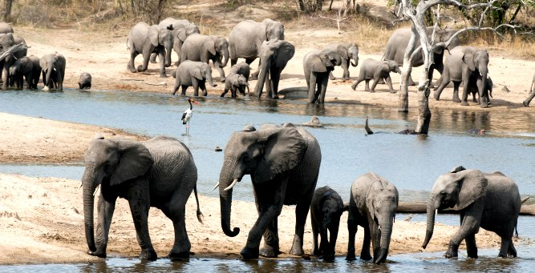
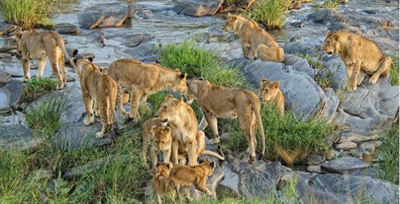

Explore the World with us!
|  |
| Which African island is right for you? How to compare African island beach holidays | |
|  |
If you’re coming all the way to Africa for a safari, it may be worth looking into a few blissful days’ break on one of our island paradises.
Some choose to unwind on an island before hitting the dawn game drives, while others prefer relaxing after late nights in the boma.Africa’s islands have warm water,
excellent diving, top-notch accommodation, and a great mix of authentic local culture and up-to-the-minute mod cons. But because there are so many options, we’ve created this list to help you choose the island that best suits your vacation plans. |
|
|
|
|
Is the Sabi Sands good for safari? A veritable 'Garden of Eden', the Sabi Sands is undoubtedly one of the brightest jewels in the Kruger crown. This unspoilt corner of South Africa has astonishing biodiversity, with 505 bird and 148 mammal species calling it home. Coupled with a temperate climate, seamless access from Johannesburg and arguably the biggest collection of award-winning 'safari chic' accommodation on the planet, it's easy to see why both safari beginners and old hands flock to the Sabi Sands year after year. But what makes it so sought after and why are prime lodges in peak season booked up months in advance? |
|
|
At the same time, it’s great if you have weeks and weeks to soak up the true atmosphere of a place, but many of us don’t have that luxury. Justin and I are only part-time travelers
and only have a limited amount of time before we have to return to our regular jobs at home. It is important to visit the must-see spots that are at the top of your list,
but make sure that you take some time to relax. We made sure to order some sangria while sitting on a patio at Place Royale, watching as tourists flocked to the church as we listened to the street performers across the square. One evening, we went on a relaxed bicycle ride along the river to enjoy the views. There are plenty of ways to take it easy in between some scheduled activities. Here’s our Quebec City 3 Day Itinerary. I’ll make note of the places we visited, our overnight accommodations, and the restaurants where we dined. On our first driving day of the trip, we departed from the Toronto area and didn’t arrive until around 6:00pm. On our first evening in town, we ate dinner at Chez Victor, and wandered around Lower Town of Old Quebec, checking out the Unusual Passages Outdoor Art Exhibition. We spent our first evening overnight at Le Saint-Pierre Auberge Distinctive. Here’s our full review. Is it just coincidence that August is the month when many people go on holiday and Africa becomes the perfect place to visit? In fact, there’s so much happening across the continent that travellers really are spoilt for choice: safari destinations feature the best game-viewing conditions, while the beaches and tropical islands bask beneath warm, dry skies. |
|
| Where to go in August in East Africa | |
|
August in Southern Africa marks the end of the region’s short-lived winter and the welcome return of warmer temperatures. Down in Cape Town, the last few winter storms wring themselves out
and the days get longer, while up in safari country the weather is pretty perfect: sunny, warm and dry.
Robben Island, lying off the coast of Cape Town, is part of a long list of islands known primarily for being prisons. But, unlike Rikers and Alcatraz, its history has seen it go from being a leper colony,
to a thriving 19th century ‘town’ complete with a school and post office, to a notorious penitentiary, and now a must-see travel destination studded with historical buildings
and home to a flock of adorable but highly endangered African penguins.
Johannesburg is Africa's economic powerhouse known to locals as Joburg, Jozi and Egoli (the ‘city of gold’). The city is modern and enormous, sprawling in all directions as the heart beat of commerce demands more offices, houses and malls. About 60 kilometres away lies Pretoria, which is the seat of administrative government in South Africa and a very pretty city |
 |
|
with jacaranda-lined streets. Both of these urban centres are vibrant and cosmopolitan, linked by a fast-moving, multi-lane highway and the high-speed Gautrain,
making it easy to explore the places that played a critical role in Nelson Mandela’s life story or which honour his legacy.
If we’re being totally honest, most of Africa’s flagship wilderness regions are wild, free and unfenced (except for the outermost borders!). Some lodges prefer, or are required by regulation, to fence their living quarters and this is obviously great for families with small children and lodges with larger guest numbers. But, let’s face it, our dreams of wildest Africa include hearing lions roar a stone’s throw from your tented suite and gazing out at a busy waterhole from the camp’s deck. |
|
| This page was last edited on 3 October 2017 |
|
Address: 123 Any Avenue, Montrea, QC.
Phone: +12 34 56 78
Email us © by Suim, Roman, Dmitrii, Anita |